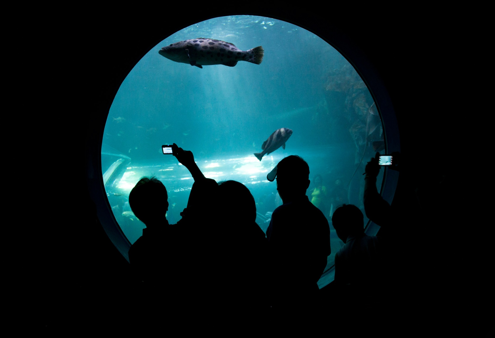
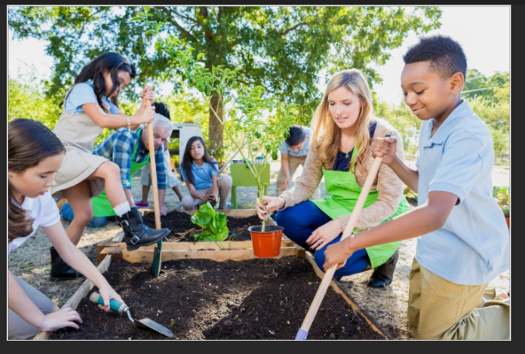
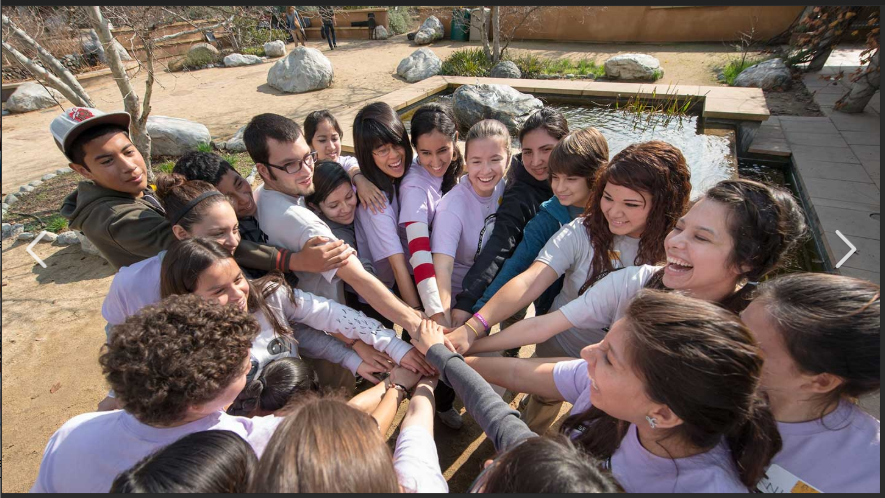
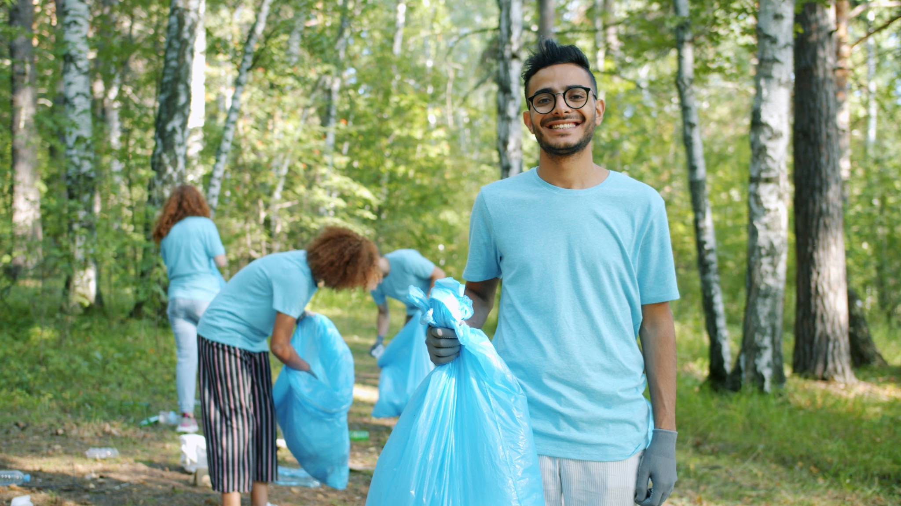

Making a Difference
One Student at a Time
See how StudyLynk is helping students grow in confidence and ability, one success story at a time.
What students are actually saying.
From middle school to college — here is what happens when someone finally gets the support they needed all along.
I spent three years thinking I just was not a math person. Three sessions in with StudyLynk and I started understanding things I had written off completely. Nobody had ever taken the time to figure out where I actually got lost. Brandon listened. That made all the difference.
I was failing my freshman comp class in college and genuinely thought I might have to drop out. Sarah did not just help me fix my essays — she helped me find my voice. I ended up with a B+ and I have not stopped writing since.
I raised my SAT score by 160 points after working with StudyLynk. I got into the school I wanted and I genuinely do not think that happens without the prep sessions. Worth every single session.
Engaging students in the real world.
We partner with local schools, libraries, and community organizations in and around Bentonville to extend learning beyond the tutoring session. Every environment is a classroom when you have the right mindset.
We go where students are.
Our outreach is built around one idea: meet students where they are, show them what is possible, and make learning feel like something worth being excited about.

Museum & Exhibit Visits
We take students to history museums, science centers, and art exhibits so that what they are studying becomes something they can see and experience firsthand.

Nature-Based Learning
Biology and environmental science come alive outdoors. We use parks, nature trails, and outdoor spaces as classrooms — connecting to the curriculum.
Tech & Digital Skills
Students explore technology as something they can create with — not just consume. Sessions cover web basics, digital tools, and problem-solving through technology.

Group Outings & Projects
Community projects that build leadership, teamwork, and a sense of responsibility beyond the classroom.
School & Library Partnerships
We work alongside local schools and libraries in Bentonville to extend academic support to students who might not otherwise have access to personalized tutoring.
Scholarship Sessions
Each semester we reserve a limited number of sessions for students who demonstrate financial need. Cost should never be the reason a student does not get help.
We serve beyond the classroom.
StudyLynk is committed to making Bentonville cleaner, healthier, and more vibrant for everyone. We organize volunteer cleanups, environmental initiatives, and community service projects to teach students that education means nothing if we do not care for the world around us.
Community Cleanup Events
Every month, StudyLynk students and tutors come together for community cleanup days. From local parks to street cleanups to partnering with environmental organizations, we show up because we have a stake in making this place better.
- Monthly park and trail cleanups
- Bentonville waterway restoration
- Local school and library grounds maintenance
- Community garden projects
- Neighborhood beautification initiatives

"If we teach students to think critically, solve problems, and care about each other — they should also care about the community they live in. Service is not separate from education. It is education."
— Brandon Scott, Founder